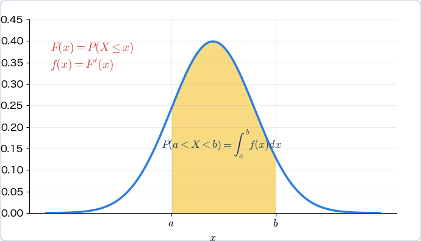
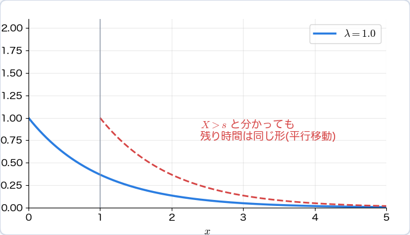
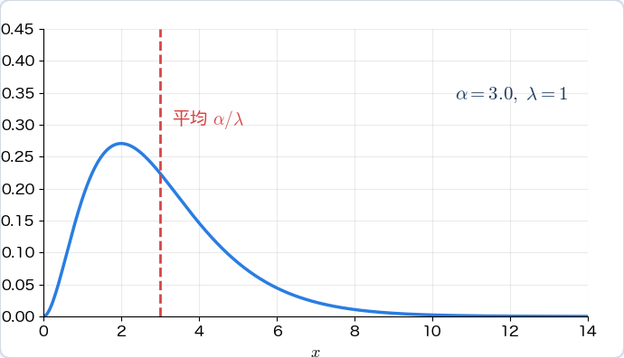
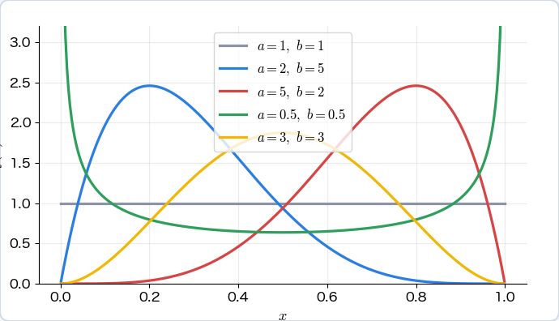
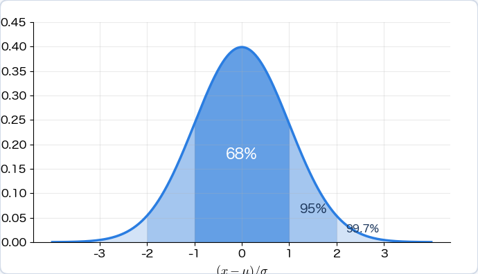
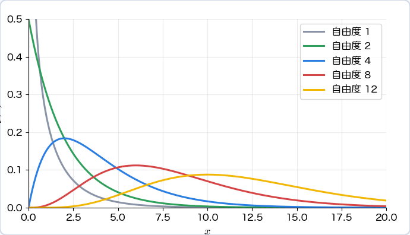
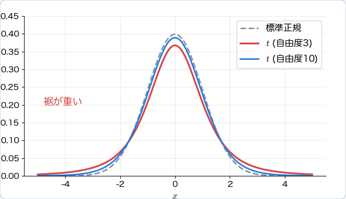
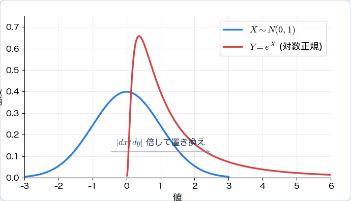
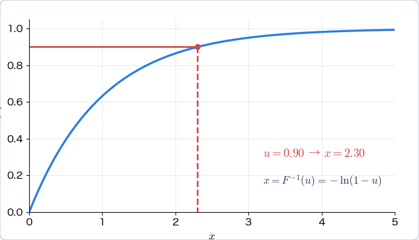
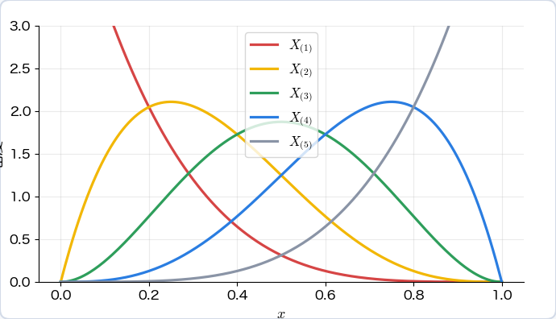

第2回 連続分布と変数変換
この回の学習目標
- 一様・指数・ガンマ・ベータ・正規分布の性質（期待値・分散・相互関係）を使い分けられる
- $\chi^2$・$t$・$F$ 分布を「正規分布から作られる分布」として定義できる
- 変数変換（密度の変換公式）、確率積分変換、順序統計量の分布を導出できる
0. おさらい：密度関数と累積分布関数
連続確率変数 $X$ は密度関数 $f(x)$ をもち、確率は面積（積分）で与えられます。
$$P(a<X<b)=\int_a^b f(x)\,dx,\qquad F(x)=P(X\le x)=\int_{-\infty}^x f(t)\,dt,\qquad f(x)=F'(x)$$
期待値 $E[X]=\int xf(x)dx$、分散 $V[X]=E[X^2]-(E[X])^2$ は離散の場合の和を積分に置き換えたものです。

1. 一様分布と指数分布
一様分布 $U(a,b)$：区間内で密度が一定。
$$f(x)=\frac{1}{b-a}\ (a<x<b),\qquad E[X]=\frac{a+b}{2},\quad V[X]=\frac{(b-a)^2}{12}$$
指数分布（待ち時間）：
$$f(x)=\lambda e^{-\lambda x}\ (x>0),\quad F(x)=1-e^{-\lambda x},\quad E[X]=\frac1\lambda,\ V[X]=\frac1{\lambda^2}$$
ポアソン過程（強度 $\lambda$）で、事象が起きる 間隔 が指数分布に従います。
無記憶性：$P(X>s+t\mid X>s)=\dfrac{e^{-\lambda(s+t)}}{e^{-\lambda s}}=e^{-\lambda t}=P(X>t)$。幾何分布の連続版です。

2. ガンマ分布
形状 $\alpha$、率 $\lambda$ のガンマ分布 $\mathrm{Gamma}(\alpha,\lambda)$：
$$f(x)=\frac{\lambda^\alpha}{\Gamma(\alpha)}x^{\alpha-1}e^{-\lambda x}\ (x>0),\qquad E[X]=\frac\alpha\lambda,\quad V[X]=\frac{\alpha}{\lambda^2}$$
- $\alpha=1$ のとき指数分布
- $\alpha$ が整数なら、独立な指数分布 $\alpha$ 個の和（$\alpha$ 個目の事象が起きるまでの待ち時間）
- 再生性：率 $\lambda$ が同じなら $\mathrm{Gamma}(\alpha_1,\lambda)+\mathrm{Gamma}(\alpha_2,\lambda)=\mathrm{Gamma}(\alpha_1+\alpha_2,\lambda)$
「ポアソン分布（個数）・指数分布（間隔）・ガンマ分布（$n$ 個目までの時間）」は一つの物語としてつながっています。

3. ベータ分布
区間 $(0,1)$ の値（確率・割合）の分布 $\mathrm{Beta}(a,b)$：
$$f(x)=\frac{x^{a-1}(1-x)^{b-1}}{B(a,b)},\qquad E[X]=\frac{a}{a+b},\quad V[X]=\frac{ab}{(a+b)^2(a+b+1)}$$
$a=b=1$ は一様分布、$a<b$ で左寄り、$a>b$ で右寄り、$a,b<1$ で U 字型。二項分布の共役事前分布 として第11回（ベイズ統計）で活躍します。

4. 正規分布
$X\sim N(\mu,\sigma^2)$ の密度は $f(x)=\dfrac{1}{\sqrt{2\pi}\sigma}\exp\left\{-\dfrac{(x-\mu)^2}{2\sigma^2}\right\}$。
- 標準化：$Z=\dfrac{X-\mu}{\sigma}\sim N(0,1)$
- 平均 $\pm1\sigma$ に約 68%、$\pm2\sigma$ に約 95%、$\pm3\sigma$ に約 99.7%
- 再生性（線形結合）：独立な $X\sim N(\mu_X,\sigma_X^2)$, $Y\sim N(\mu_Y,\sigma_Y^2)$ に対し $$aX+bY\sim N\big(a\mu_X+b\mu_Y,\ a^2\sigma_X^2+b^2\sigma_Y^2\big)$$ （平均は足し合わせ、分散は 係数の二乗 をかけて足す）
- 積率母関数：$M(t)=\exp(\mu t+\sigma^2t^2/2)$

5. $\chi^2$ 分布・$t$ 分布・$F$ 分布
正規分布から作られる、推定・検定の主役たちです。
カイ二乗分布 $Z_1,\dots,Z_n$ が独立な標準正規のとき
$$\chi^2_n=Z_1^2+\cdots+Z_n^2,\qquad E=n,\quad V=2n$$
$\chi^2_n=\mathrm{Gamma}(n/2,\,1/2)$。独立なら $\chi^2_m+\chi^2_n=\chi^2_{m+n}$（自由度が足される）。

$t$ 分布 $Z\sim N(0,1)$ と $V\sim\chi^2_n$ が独立のとき
$$t_n=\frac{Z}{\sqrt{V/n}}$$
標準正規分布に似ていますが 裾が重く、自由度 $n$ が大きいと標準正規分布に近づきます。母分散が未知のときの平均の推定・検定に使います。
$F$ 分布 独立な $U\sim\chi^2_m$, $V\sim\chi^2_n$ に対し
$$F_{m,n}=\frac{U/m}{V/n}$$
分散の比、分散分析、回帰の検定に使います。$t_n^2=F_{1,n}$ という関係も覚えておきましょう。

6. 変数変換（1変数）
$X$ の密度 $f_X$ が分かっていて、$Y=g(X)$（$g$ は単調）のとき、
$$f_Y(y)=f_X\big(g^{-1}(y)\big)\left|\frac{dx}{dy}\right|$$
絶対値を忘れない（忘れると負の密度が出る）。確率が微小区間で保存される、$f_Y(y)|dy|=f_X(x)|dx|$ という考え方から導かれます。単調でないときは区間ごとに場合分けして足し合わせます。
例：$X\sim N(0,1)$, $Y=e^X$ なら $x=\ln y$, $|dx/dy|=1/y$ なので $f_Y(y)=\frac{1}{\sqrt{2\pi}\,y}e^{-(\ln y)^2/2}$（対数正規分布）。

7. 確率積分変換
$X$ が連続で累積分布関数が $F$ のとき、$F(X)\sim U(0,1)$ です（$P(F(X)\le u)=P(X\le F^{-1}(u))=u$）。
逆に $U\sim U(0,1)$ なら $F^{-1}(U)$ は分布関数 $F$ に従います。これが 逆関数法 による乱数生成です。指数分布なら $F^{-1}(u)=-\ln(1-u)/\lambda$。

8. 順序統計量
$X_1,\dots,X_n$ が独立同分布（分布関数 $F$、密度 $f$）のとき、小さい順に並べたものを $X_{(1)}\le\cdots\le X_{(n)}$ とします。
- 最大値：$P(X_{(n)}\le x)=F(x)^n$、密度 $nF^{n-1}f$
- 最小値：$P(X_{(1)}\le x)=1-(1-F(x))^n$、密度 $n(1-F)^{n-1}f$
- $k$ 番目：$$f_{(k)}(x)=\frac{n!}{(k-1)!\,(n-k)!}F(x)^{k-1}\{1-F(x)\}^{n-k}f(x)$$
（「$k-1$ 個が $x$ より下、1 個が $x$ ちょうど、$n-k$ 個が上」という多項型の数え上げ。）一様分布なら $X_{(k)}\sim\mathrm{Beta}(k,\,n-k+1)$。

演習問題
演習1 指数分布の最小値
問題 電球の寿命は平均 10 時間の指数分布に従う。独立な 3 個を同時に点灯したとき、最初に切れるまでの時間 $T$ の期待値と $P(T>5)$ を求めよ。
解答 1 個が $t$ 時間より長持ちする確率は $e^{-0.1t}$。3 個とも長持ちする確率が $P(T>t)=e^{-0.3t}$ なので、$T$ は率 0.3 の指数分布。$E[T]=1/0.3=10/3\approx\mathbf{3.33}$ 時間、$P(T>5)=e^{-1.5}\approx\mathbf{0.223}$。
（一般に、率 $\lambda$ の指数分布 $n$ 個の最小値は率 $n\lambda$ の指数分布。）
演習2 変数変換
問題 $X\sim U(0,1)$, $Y=X^2$ の密度関数と $E[Y]$ を求めよ。
解答 $x=\sqrt y$, $|dx/dy|=\dfrac{1}{2\sqrt y}$、$f_X=1$ なので $f_Y(y)=\dfrac{1}{2\sqrt y}\ (0<y<1)$。
$$E[Y]=\int_0^1 y\cdot\frac{1}{2\sqrt y}dy=\frac12\int_0^1y^{1/2}dy=\frac13$$
直接 $E[X^2]=\int_0^1x^2dx=1/3$ と計算しても一致する。
演習3 一様分布の最大値
問題 独立な 5 個の $U(0,1)$ 乱数の最大値を $M$ とする。$P(M\le0.9)$ と $E[M]$ を求めよ。
解答 $P(M\le0.9)=0.9^5\approx\mathbf{0.590}$。密度は $f_M(x)=5x^4$ なので $E[M]=\int_0^1 5x^5dx=\dfrac56$。$\mathrm{Beta}(5,1)$ の平均 $5/6$ と一致する。
演習4（発展） $\chi^2$ 分布の和
問題 $X_1,\dots,X_4$ が独立に $N(0,1)$ に従うとき、$\sum X_i^2$ の期待値と分散を求めよ。また $X_1^2+X_2^2$ はどんな分布か。
解答 $\chi^2_4$ なので期待値 $4$、分散 $8$。$X_1^2+X_2^2\sim\chi^2_2$ は指数分布（率 $1/2$、平均 2）。
まとめ・チェックリスト
- [ ] 指数分布の無記憶性、ガンマ分布との関係（個数・間隔・$n$ 個目）を説明できる
- [ ] 正規分布の線形結合の平均・分散を計算できる
- [ ] $\chi^2$・$t$・$F$ の定義と $t_n^2=F_{1,n}$ を言える
- [ ] 変数変換の公式（絶対値つき）と、逆関数法を使える
- [ ] 最大値・最小値・$k$ 番目の順序統計量の分布を導出できる
次回：多変量分布と多変量正規分布
動画の音声：VOICEVOX:ずんだもん / VOICEVOX:四国めたん 立ち絵：坂本アヒル様